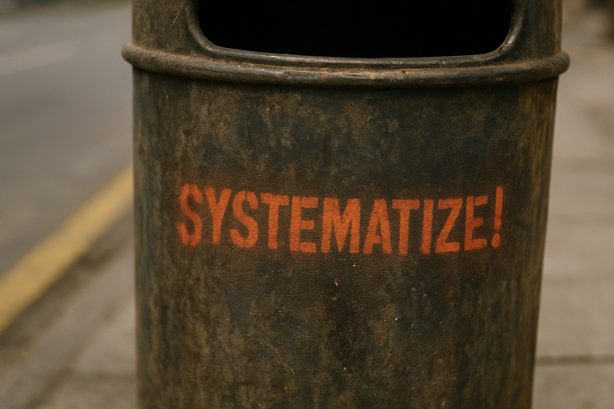

Conferences | The most recent
Telling to Remain
| Lecture by Edgardo Civallero | Published: November 21, 2025 |
A complete version of the conference presented at a professional meeting organized by BibloRed (Bogota, Colombia, 21.Nov.2025). This work is published here for reading and discussion.
Bogotá's libraries form a powerful but fragile ecosystem: diverse, uneven, often precarious, and rich in knowledge that rarely gets written down. This conference and its accompanying academic reflection argue that systematizing experiences, communicating with intention, and writing from practice are not bureaucratic duties but acts of memory, resistance, and professional continuity. From community libraries improvised in neighborhoods to university systems with established infrastructures, all generate situated intelligence that risks vanishing if not narrated. The talk and text together propose a simple, urgent idea: the future of the city's libraries depends on their capacity to tell what they do, why it matters, and how they survive — transforming everyday practice into collective memory rather than institutional amnesia.
Download the full version.
All conferences can be found in the section Cajón de sastre.
Navsuv | The Bi-Weekly Summary

| Published: November 16, 2025 |
What if vocabularies behaved like mycelia, archives like ecosystems, and access like a right rather than a literacy test? This issue follows two weeks of work on micro-thesauri, ecological interoperability, cloud-forest memory, and the exclusionary scripts of the textual interface — covering the period 03-16 Nov 2025.
Continue reading...
Blogs
Chronicles of a biblio-naturalist | The most recent post

The Cloud Forest Does Not Archive
| Ecosemiotic Archivistics from the Cloud Forest (04) | Published: November 28, 2025 |
In the cloud forest, moss becomes legible only when rain, air, and substrate align. Its memory is not stored but enacted — a momentary configuration that vanishes when moved. What would it mean for archival practice if some information exists only by remaining in place?
Continue reading...
All the posts of the blog
Blog The Log of a Librarian | The most recent post

Meaning That Is Lost When Uprooted
| Ecosemiotic Fieldnotes (04) | Published: December 2, 2025 |
What happens to meaning when it cannot be extracted, stored, or moved? This essay explores ecological forms of memory that resist archival capture — where legibility depends on rhythm, condition, and relation, and where uprooting is not preservation but erasure. A call to rethink interoperability as a matter of care, not control.
Continue reading...
All the posts of the blog
Critical notes | The most recent post

The Page Cannot Hold the Dance
| Dealing with Literocentrism (10 of 10) | Published: December 4, 2025 |
Libraries claim openness, but their systems still assume memory must hold still. What moves, vanishes, or lives in bodies is forced onto the page and stripped of form. Until design changes — not just collections — plural knowledge will remain unreadable to the institution.
Continue reading...
All the posts of the blog
Cajón de sastre | The most recent post

Nemboro. The Power of Fictions
| Series of 6 posts | Published: September 23, 2025 |
Three hundred woven faces stared back with empty eyes, carrying stories of ritual, protection, and transformation. At first, they seemed like ancestral masks — but what if they were documents, texts woven in fiber and dye? This series traces the enchantment of encountering the so-called nemboro in Panama, and the unsettling realization that even invented artifacts can shape archives, markets, and memory. From seduction to rupture, from object to ontology, these posts explore how librarianship itself becomes entangled in fictions — and why even myths leave metadata behind.
Continue reading...
All the posts of the blog
Key topics
Insurgent Epistemologies and Decolonialism
Displaced, denied, illegible ways of knowing. Produced and remembered by force. Thought from the South, from the margin, and from the undocumented cry. What doesn't fit in the archive. Memory that doesn't ask permission.
→ Read moreCritical Semantics and Library / Archive Composting
Composting "dead" libraries and archives so that something different can emerge from them: transforming rigid structures into living, dynamic systems capable of nurturing new forms of knowledge. Knowledge technologies serving other logics based on connectivity, decentralization, and respect for epistemological diversity. Unexpected connections, unsuspected weavings. Modeling the world without replicating its violence, building data architectures that acknowledge power, context, and resistance.
→ Read moreWeaving of Memories and Meanings to Produce New Knowledge
Weaving with memories, remnants, and gestures. Binding fragments to build something greater. Making objects, publications, and tools that carry memory inside. It's not about representation — it's about embodiment. Every form is also a form of knowing.
→ Read moreMargins, Epistemic Justice, and Othered Documents
Othered knowledges and memories. Documents that go unnamed. Orality, graffiti, basketry, ceramics, textiles, hairstyles, territory — archives without paper. The equality of knowledge systems. Ecologies of knowing, non-hegemonic epistemic networks. Working in the margins is how the center is made.
→ Read moreSounds and Silences
Musical instruments as archives. Soundscapes as libraries. Songs, noises, echoes, vibrations — ways of recording the unspeakable. And the silences that scream. Listening is also a way of archiving.
→ Read moreA territory under construction

This space is not a portfolio. It is not an academic site, a professional showcase, or a digital CV.
It is a woven landscape — uneven, layered, and sometimes opaque. Here, libraries, classification, silence, memory, and broken epistemologies intertwine — not as topics, but as tensions.
There is no clear structure. Some threads will vanish. Others will echo later. You are not expected to follow everything — only to listen.
Nothing here is optimized. Not for search engines. Not for clicks. Not for legibility. This is not where you scroll. This is where you stop.
My name's Edgardo Civallero. Welcome to my website.
[A central part of my current work—focused on researching, classifying, and documenting musical instruments as carriers of memory and epistemic devices—is gathered at Instrumentarium, a site I created and lead as Edgardo Civallero. There, I explore instruments as living documents, experiment with alternative taxonomies, and propose new ways of listening to and narrating the world.]
Read my complete profile...